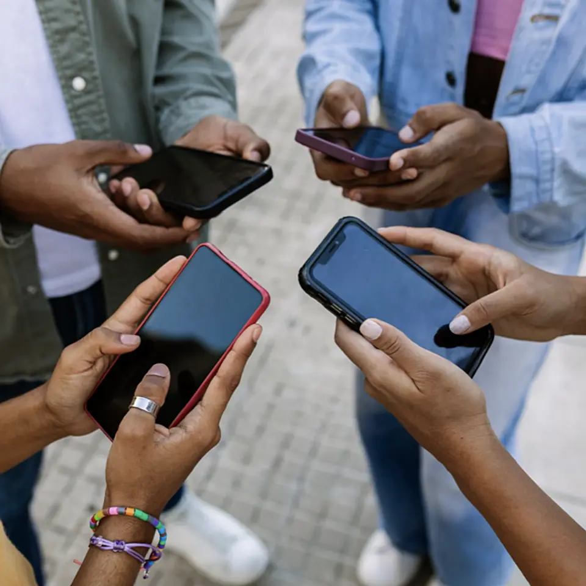
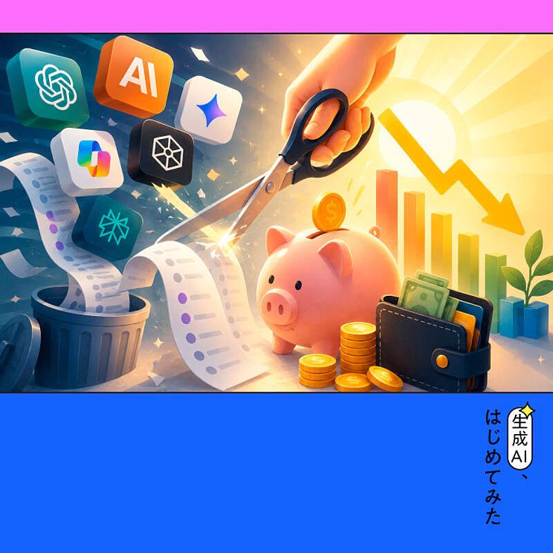

1. 【受験はオワコン】AIが「日本型教育」をぶっ壊している
発行日時: 2026/08/03 05:30 JST
あなたに関係ありそうな理由: AI導入で変わる採用・育成を、知識量ではなく現場で価値を実現する力から考え直せるから。
NewsPicksオリジナル記事は、良い中高一貫校、名門大学、良い会社という日本の成功ルートを、AIが仕事の前提を変える局面から問い直す。
米国では若年大卒者の雇用が揺らぐ一方、日本は人手不足で大卒求人倍率も高い。
両国を同一視するのでなく、知識処理をAIが安くするほど、どんな仕事が不足し、何を学ぶべきかを考える材料として読むべきだ。
経産省の就業構造推計では、将来は事務職・文系人材の余剰に対し、AI・ロボット、現場、理系の人材不足が見込まれる。
記事は、AI耐性とスキルの希少性を二軸に、医療・介護のように専門性、現場の判断、対人コミュニケーションが重なる仕事を例に挙げる。
教育では、正解を速く再現するだけでなく、自分で問いを持ち、仲間と学び、実際に形にする主体性が重要になるという。
中学受験熱を象徴するSAPIX型学習についても、課題をこなすことと競争に最適化されすぎると、主体性を損ねる危険があると指摘する。
その対案として記事が注目するのは、高専や企業内学校だ。
給与・寮生活・厳しい訓練を伴いながら、技能、規律、現場のトラブル対応を学ぶ場では、AIが反復作業を担っても、人が原理原則を理解して実現する力を鍛えられる。
コメントは一枚岩ではない。
受験自体ではなく「正解がある世界」しかないと思わせる文化が問題だという意見、基礎力と創造力は両輪だという意見、米国と日本の雇用構造を安易に接続すべきでないという批判もある。
結論を「受験廃止」に矮小化せず、偏差値だけで将来を設計しないこと、知識・技能・協働・失敗経験をどう組み合わせるかという問いとして受け取りたい。
企業側にも同じ宿題がある。
採用で学歴や既存経験だけを見るのではなく、未知の課題にどう取り組んだか、現場の人とどう協働したか、学び直しを続けられるかを見極める必要がある。
学校、家庭、企業がそれぞれに教育を外注せず、変化を前にして試せる小さな機会を渡すことが、長い目で見れば最も実践的な人材投資になる。
選抜は残っても、その選抜後に誰が伸びるかは、正解を急ぐ習慣だけでは決まらない。
自分の興味を深め、異なる人と試し、失敗から立て直す経験を、日常の教育に戻す必要がある。
変化の速い時代ほど、本人が選び直せる土台を厚くしたい。
仕事や会話で使える一言AI時代に弱くなるのは受験そのものではなく、偏差値だけで未来を設計する考え方です。
NewsPicks原文を読む
2. 【要注意】夏休みに増える「10代のメンタル不調」意外な原因
発行日時: 2026/08/03 05:30 JST
あなたに関係ありそうな理由: 子どもの不調を本人だけの課題にせず、家庭・学校・職場にも通じる安心と関係性の設計として考えられるから。
NewsPicksオリジナル総合診療医の髙橋宏瑞氏が、夏休み明けに表面化しやすい10代の不調を、親子関係と日常の環境から解説する。
長期休みは睡眠や食事が乱れ、ゲームや動画への没入も増えやすい。
そこで、それまで抑え込まれていた心身の問題が見え、新学期に学校へ行けなくなることがあるという。
記事が警戒するのは、善意の「過保護」である。
進路や勉強を親の価値観で決め、良い学校へ進ませることを愛情と見なすと、子どもがどう受け取っているかとのずれが生まれる。
大切なのは、子どもが自由に話し、選び、安心できる関係かどうかだ。
心が安定している状態を、ストレスにしなやかに対応できる「心理的柔軟性」と説明し、萎縮して本音を言えない状態を見逃さないよう促す。
問題があるとき、子どもだけでなく、親自身が受けてきた教育や苦しさを振り返る必要がある点も重要だ。
目の前の感情を受け止め、親と異なる価値観を否定せず、生活に支障が出るほどのスマホ・ゲーム依存は専門家につなぐ。
将来のための管理を急ぐより、経験や遊びも含む今の時間を支えるという提案である。
コメントでは、親が自分とは違う価値観を受け入れる難しさ、親自身が毎日を健やかに過ごすことの大切さ、家庭でも学校でもないサードプレイスの必要性が語られた。
職場では多様な価値観を受け止められても、親子では強いバイアスが働くという指摘もある。
個人の頑張りだけに親の負荷を集中させず、安心して距離を取れる大人・場・相談先を増やす視点まで含めて読みたい。
親が完璧であることを求める記事ではない。
間違えた時に謝り、話を聞き、必要なら相談先へつなぐという修復可能な関係をつくることが要点である。
家庭のなかだけで抱え込まず、学校、医療、地域、親族、友人といった複数の支えを持てれば、親も子も一人の期待や不安に押しつぶされにくくなる。
夏休みの変化を、問題が起きた証拠ではなく、生活と関係を調整し直す合図として受け止められると、次の学期に向けた対話を始めやすい。
早い段階の小さな相談が、孤立を防ぐ。
気になる変化を、本人の甘えや努力不足と決めつけないことが出発点になる。
見守る大人にも、休息と相談先が必要だ。支援を受ける選択を、ためらわないでよい。
仕事や会話で使える一言子どもの不調を直す前に、安心して本音を言える関係があるかを点検したいです。
NewsPicks原文を読む
3. 【巨額流入】若者の「SNS禁止」で得する企業
発行日時: 2026/08/03 05:30 JST
あなたに関係ありそうな理由: プラットフォーム規制が、顧客獲得・採用・広告の設計をどこまで変えるかを先回りして考えられるから。
FORTUNE / NewsPicks掲載欧州で進む若年層のSNS利用制限は、子どもの安全だけでなく、企業のマーケティングの前提を動かし始めている。
記事によれば、フランスは15歳未満の利用を禁じる法案を可決し、EU加盟国でも独自の規制検討が進む。
英国でも16歳未満の利用禁止が議論され、若年層にSNSで商品を見つける消費者が多い状況で、飲食料品、玩具、ファッション、美容などは接点の再設計を迫られる。
企業は広告費を単に減らすのではなく、ストリーミング、ゲーム、リテールメディア、体験、ロイヤルティ施策へ配分を変え、保護者や成人顧客との直接関係を強める可能性がある。
SubstackやWhatsAppなど代替チャネルへの期待もあるが、対象外だからといって子どものデータ保護規制を回避できるわけではない。
むしろ、フィードの中で偶然見つけてもらう設計から、顧客がいる複数の場で長く信頼を築く設計へ移るというのが記事の中心だ。
商品検索がSNSからAIアシスタントへ移る流れも、プラットフォーム依存を一段と不安定にする。
コメントでは、SNSの定義をどこまで広く取るか、規制後もVPNなどの抜け道が残るのではないかという制度面の論点が出た。
企業実務の視点では、若手採用をInstagramに寄せた建設会社が、工業高校との関係や現場見学会を再構築するコストを負うという指摘が具体的だ。
規制で本当に高くつくのは広告費の移動ではなく、一度手放した顧客・地域・学校との接点をつくり直すことかもしれない。
自社の集客・採用が単一基盤に何％依存しているかを数字で把握し、保有できる関係を増やしておく必要がある。
これはSNSをやめるという話ではない。
アルゴリズム、年齢確認、広告単価、利用規約が変わっても残る接点を、日頃から併走させるという話だ。
メール、会員、イベント、紹介、現場体験、地域との連携など、すぐ効率が見えないチャネルほど、規制や仕様変更が起きた時の事業継続性を支える。
若い世代に何を届けるかも、配信量より、現実の体験や周囲からの信頼を通じて選ばれる理由をつくれるかへ戻っていく。
そこで得た信頼は、規制にも強い資産になる。
媒体の流行より関係の質を重視したい。

仕事や会話で使える一言規制で失うのは広告枠ではなく、外部プラットフォームに預けきった顧客接点です。
NewsPicks原文を読む
4. ChatGPTが安くなる!?契約方法で変わるAI利用料
発行日時: 2026/08/03 06:00 JST
あなたに関係ありそうな理由: 個人のAIツール代と、組織がこれから向き合うトークン費用を、使い方と評価指標の両面から考えられるから。
NewsPicks +d生成AIを使う人ほど、ChatGPT、Claude、Gemini、音声入力、Notion AIと月額課金が積み上がる。
この記事は、AIの活用を止めるのでなく、契約経路、代替手段、トークン消費を見直して同じ成果をより低い費用で得る考え方を紹介する。
最初の例は、ChatGPT PlusをiOSアプリ経由かウェブ経由かで契約すると円建て・ドル建ての差が出るという話だ。
毎月の差額は小さくても、固定費として積み上がれば判断の対象になる。
次に、専用の音声入力アプリへ追加課金している場合、Codexの音声入力で代替できる可能性を挙げる。
精度やフィラー除去では専用製品に及ばない面がある一方、既存の契約内で目的を満たすなら、ツールを増やさない選択になる。
Notion AIのカスタムエージェントについても、従量課金が生じるトリガー実行と、チャット内での試行を区別して使う方法を提示する。
ただし、節約術の核心は特定サービスの回避ではない。
AIが職場に浸透すると、トークン費用は人件費に次ぐ管理対象になり得る。
単純な調査・執筆には軽量モデル、高度な壁打ちには上位モデルというように、作業の難しさでモデルと推論の深さを使い分ける。
記事は、利用量だけを評価すると、意味のない対話で消費を増やす「働いたふり」が起こると警告する。
コメントは投稿者による節約術の案内のみだったが、本文の論点は明確だ。
今後の評価軸は「どれだけAIを使ったか」ではなく、使ったトークンに対してどれだけ成果を出したかへ移る。
個人でもチームでも、契約を増やす前に用途、品質の許容範囲、消費量、成果を見える化したい。
コストを絞ることが目的化すると、学習や検証に必要な試行まで止まりかねない。
だから、節約対象は成果に寄与しない重複や過剰な推論であり、顧客価値や判断の精度を高める使い方は残す。
この区別をできるチームほど、予算制約を単なる締め付けでなく、仕事の設計を磨く契機に変えられる。
まずは一週間だけでも、用途別の利用回数と出力の使われ方を記録し、不要な反復と必要な探索を分けるところから始めるとよい。
費用の議論を、品質改善の会話につなげたい。
安さだけで失わない基準も必要である。

仕事や会話で使える一言AI活用の次の評価軸は、利用量ではなく「1トークン当たりの成果」になりそうです。
NewsPicks原文を読む
5. 【世界のニュース７選】米 円安阻止へ協調「追加介入も」
発行日時: 2026/08/03 17:00 JST
あなたに関係ありそうな理由: 為替、原油、紛争、気候、スポーツ統治を一つの地政学的な連鎖として短時間で捉えられるから。
The Economist / NewsPicks掲載The Economistの短報は、米国の円下支え発言を先頭に、世界で同時に起きる七つの変化を並べる。
米ベッセント財務長官は、米国が円を支えるための介入をためらわないと述べ、日本側は先週の行動を共同介入と説明した。
ドル円が163円から155円へ動いた局面は、為替が金融市場だけでなく政府間の協調や政策発言で大きく振れることを示す。
中東では、トランプ大統領が一部攻撃を見送ってイランとの協議開始を語る一方、イラン側の反応は不透明で、原油価格は下落した。
停戦や協議の見通しが物流・エネルギー価格へ直結する構図である。
欧州では移民問題、山火事、熱波が重なり、スペインの飛び地セウタでは誤情報も背景に大量の移民が国境を越えた。
山火事はフランスやスペインで鎮静化へ向かう一方、警戒の中心はギリシャへ移り、消火活動中の事故も起きた。
短報の「今日の数字」は、世界人口の一割に過ぎない欧州が熱波による死者の36％を占めるというものだ。
気候リスクは被害の偏りと、冷房・電力をめぐる地政学まで含む課題として現れる。
ミャンマーでは拘束中のアウンサンスーチー氏の写真が公開され、ウクライナとロシアは製油所・港湾などインフラ攻撃を強める。
さらにFIFAの商業事業株式売却構想は、UEFAなどの反発で撤回に追い込まれた。
コメントでは、スーチー氏の写真の真偽や現地の実態を確かめたいという声が出た。
七つの話題を単発で消費せず、為替、エネルギー、情報の信頼性、気候、統治が相互に結びつく前提で追うと、日々のニュースが立体的になる。
たとえば為替の変動は輸入価格や旅行だけでなく、資源国との交渉力、金融政策、企業の投資判断へつながる。
火災や熱波は保険、農業、電力、都市の暮らしに波及する。
短報を起点に、自分の仕事に近い二つの接点を探すだけでも、国際ニュースを遠い出来事で終わらせずに済む。
重要なのは予測を当てることではなく、どの変数が動いた時に自社、家計、地域が影響を受けるかを知り、確認すべき指標を持っておくことである。
変化を追う速度より、見直せる仕組みが効いてくる。
依存度を小さくする準備が、急な変動に効く。
備えは日々の観察から始まる。
仕事や会話で使える一言為替も原油も気候も、ニュースを分けるより「どの前提が同時に動いたか」で見るとつながります。
NewsPicks原文を読む